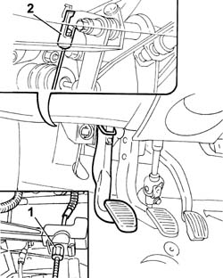
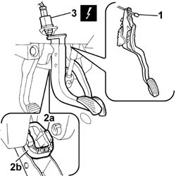
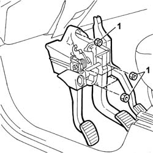
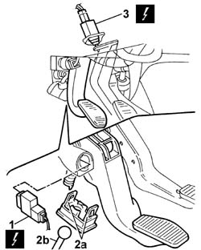
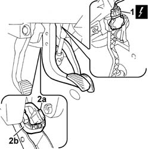
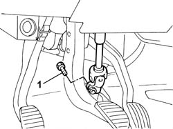
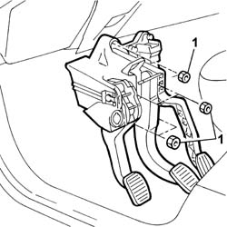

3330B02 pedal assembly - r r
- Path
- Procedures > 33 BRAKES > 3330 HYDRAULIC BRAKE SYSTEM > 3330B pedal unit > 3330B02 pedal assembly - r r
- Kind
- repair procedure (removal / refitting; the operation number is the code)
- Applies to
- engines: 1.2 8v, 1.9 DIESEL; all production periods
- Interactive page
- https://sloeber94.github.io/elrnDB-fDbl/en/#/2584645
Applies to: engines: 1.2 8v; all production periods
 Removing
Removing
 Refitting
RefittingDisconnect the battery negative terminal lead.
1. Disconnect the clutch control cable from the engine bay.
2. Disconnect the control cable on the clutch pedal.

Applies to: engines: 1.2 8v; all production periods
1. Disconnect the control cable from the accelerator pedal.
2. Disconnect the brake servo rod from the brake pedal; press on the side tabs of the retaining device (2a), move retaining ring (2b) back and release the rod from the pedal.
3. Disconnect the brake light switch from the brake pedal.
Name | Connector | |
|---|---|---|
3 | Brake pedal switch |

Applies to: engines: 1.2 8v; all production periods
1. Undo the bolt securing the steering column shaft to the pinion on the steering box; Place the lower steering column shaft to one side.
Applies to: engines: 1.2 8v; all production periods
1. Undo the nuts securing the pedal unit to the body and remove.

Applies to: engines: 1.2 8v; all production periods
Refitting
RemovingPlace the pedal unit in the car and secure using the retaining nuts.
 | Fastening | Component | Ø | Value (daNm) |
|---|---|---|---|---|
- | Nut | PEDAL MOUNT | M8 | 2.8 |
Fit the lower steering column shaft to the steering box pinion and secure by means of a bolt.
| Fastening | Component | Ø | Value (daNm) |
|---|---|---|---|---|
- | Bolt | STEERING SHAFTS | M8 | 3.7 |
Connect the brake servo rod to the brake pedal.
Connect the brake light switch to the brake pedal.
 | Name | Connector |
|---|---|---|
- | Brake pedal switch |
Connect the accelerator cable to the pedal.
Connect the clutch cable to the pedal.
Connect the clutch cable to the lever on the gearbox.
Op. 1820A14 CLUTCH PEDAL - ADJUST TRAVEL.
Connect the battery negative terminal lead.
Applies to: engines: 1.9 DIESEL; all production periods
Removing
RefittingDisconnect the battery negative terminal lead.
1. Turn the clutch pedal switch and disconnect.
Name | Connector | |
|---|---|---|
1 | Clutch pedal switch |
2. Move the clutch pedal to the end of its travel, then undo tabs (2a) of retaining device to release master cylinder rod (2b) from the pedal.
3. Disconnect the brake light switch.
| Name | Connector |
|---|---|---|
3 | Brake pedal switch |

Applies to: engines: 1.9 DIESEL; all production periods
1. Disconnect the electrical connector from the accelerator pedal potentiometer.
| Name | Connector |
|---|---|---|
1 | Accelerator pedal potentiometer |
2. Disconnect the brake servo rod from the brake pedal. press on the side tabs of retaining device (2a), move back retaining ring (2b) and release the rod from the pedal.

Applies to: engines: 1.9 DIESEL; all production periods
1. Undo the bolt securing the lower steering column shaft to the pinion on the steering box; place the lower steering column shaft to one side.

Applies to: engines: 1.9 DIESEL; all production periods
1. Undo the nuts securing the pedal unit to the body and remove.

Applies to: engines: 1.9 DIESEL; all production periods
Refitting
RemovingPlace the pedal unit in the car and secure by means of retaining nuts.
| Fastening | Component | Ø | Value (daNm) |
|---|---|---|---|---|
- | Nut | PEDAL MOUNT | M8 | 2.8 |
Fit the lower steering column shaft to the steering box pinion and secure by means of a bolt.
| Fastening | Component | Ø | Value (daNm) |
|---|---|---|---|---|
- | Bolt | STEERING SHAFTS | M8 | 3.7 |
Connect the brake pedal rod to the brake pedal.
Connect the connector to the accelerator pedal potentiometer.
| Name | Connector |
|---|---|---|
- | Accelerator pedal potentiometer |
Connect the brake light switch to the brake pedal.
| Name | Connector |
|---|---|---|
- | Brake pedal switch |
Connect the master cylinder rod to the clutch pedal and insert the retaining device tabs into the seats on the pedal.
Connect the clutch pedal switch to the pedal.
| Name | Connector |
|---|---|---|
- | Clutch pedal switch |
Connect the battery negative terminal lead.